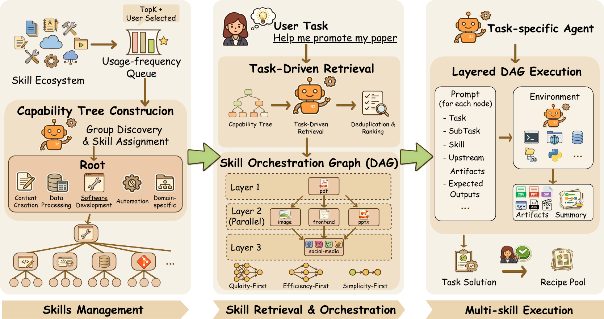
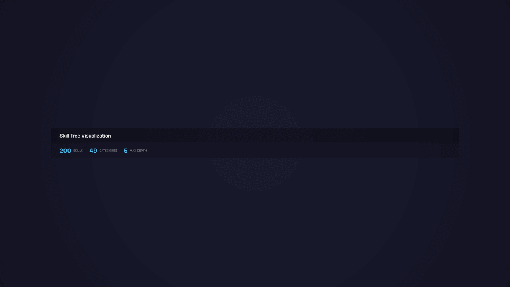
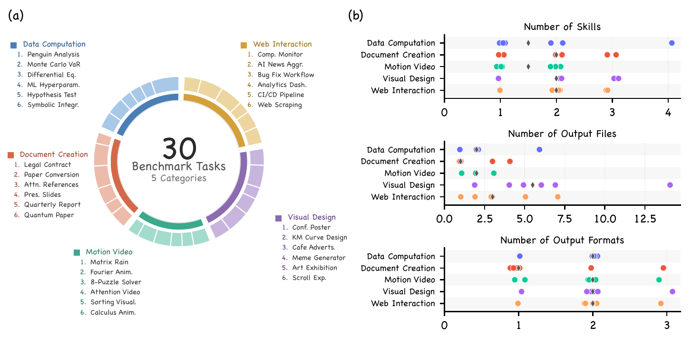
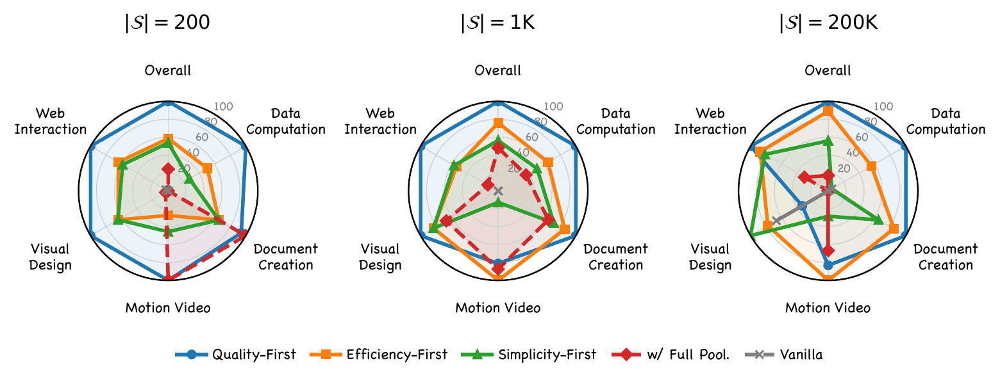
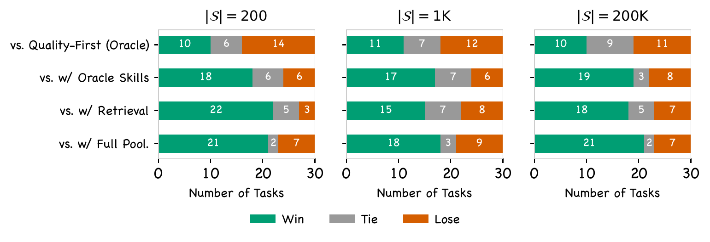
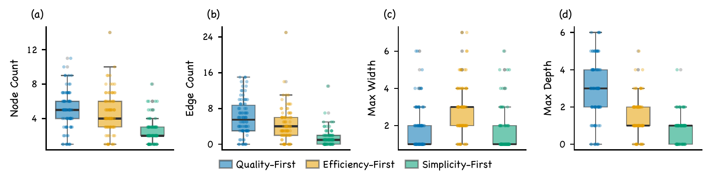
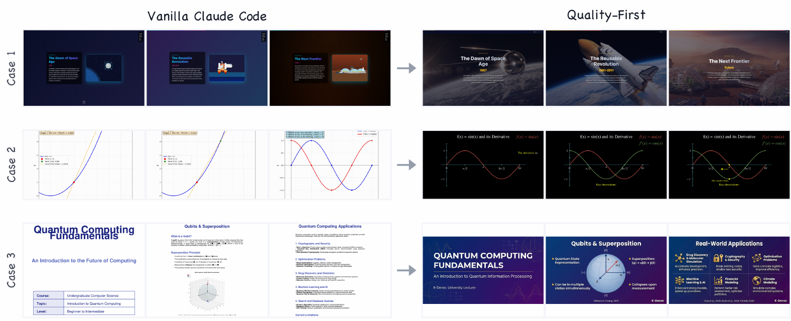
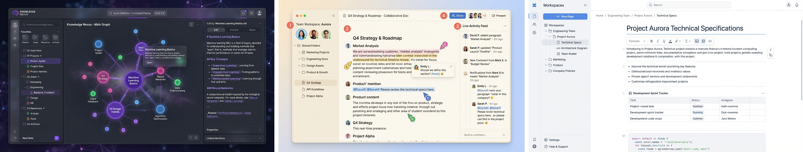
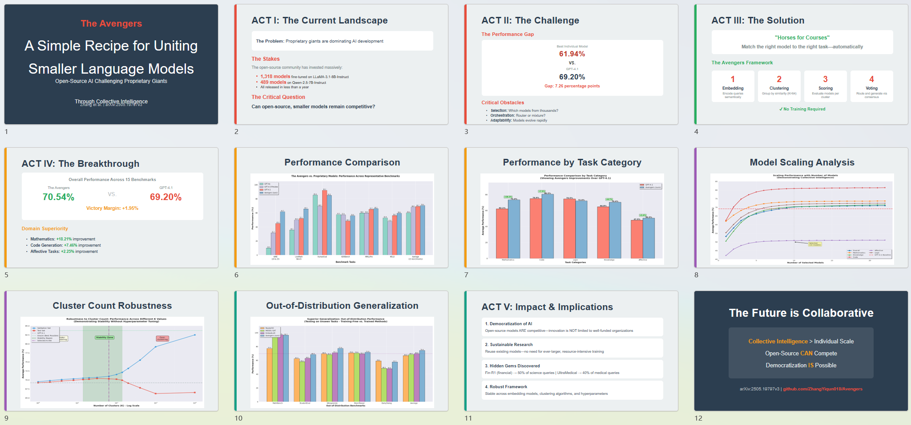

Stage 1 · Manage Skills
Organize ecosystem skills into a capability tree for coarse-to-fine discovery.
- Node-level recursive categorization
- Usage-frequency queue for active set
- Dormant index with semantic suggestions
Agent Skill Ecosystem
Build Your Agent from 200,000+ Skills via Skill Retrieval & Orchestration
Method
AgentSkillOS follows a two-stage pipeline: Manage Skills (capability-tree construction) and Solve Tasks (retrieval, orchestration, and execution).
Organize ecosystem skills into a capability tree for coarse-to-fine discovery.
Build a task-specific agent through retrieval and DAG-based multi-skill execution.

Visualizing how the skill tree scales from a curated starter set to a large-scale ecosystem.

4 levels, 22 nodes — a curated starter set.

7 levels, 47 nodes — mid-scale ecosystem.

6 levels, 67 nodes — large-scale ecosystem.
Benchmark
The benchmark emphasizes three properties: multimodal creative tasks spanning multi-format outputs, pairwise evaluation with position-bias mitigation, and Bradley-Terry aggregation.
Tasks require end-user artifacts in multi-format outputs such as PDF, PPTX, DOCX, HTML, video, and generated images.
Outputs are compared in both orders to reduce position bias and capture reliable preference signals.
Pairwise preferences are aggregated into continuous ranking scores for fine-grained system comparisons.

Each benchmark task is shown as a card with a prompt preview. Open details to read the full prompt, required skills, and output files.
Experiments
Evaluated across 200 / 1K / 200K skill ecosystems, AgentSkillOS demonstrates consistent superiority over baselines, with ablation confirming that both retrieval and orchestration are indispensable, and strategy selection producing structurally distinct execution graphs.
All three AgentSkillOS variants achieve the highest Bradley-Terry scores across 200 / 1K / 200K ecosystems. The w/ Full Pool baseline, which feeds the entire skill set directly to the agent, scores poorly because a growing fraction of skills becomes invisible — structured retrieval and orchestration overcome this scalability bottleneck.
Removing components reveals a clear degradation gradient. Without DAG orchestration, retrieval alone is insufficient; without retrieval, even oracle skills cannot close the gap. Compared to the oracle upper bound, Quality-First shows only a modest deficit that narrows as the ecosystem grows, validating that tree-based retrieval effectively approximates oracle skill selection.
Each orchestration strategy faithfully translates its design intent into a distinct DAG topology. Quality-First builds deep, multi-stage pipelines with rich dependencies; Efficiency-First trades depth for width to maximize parallelism; Simplicity-First retains only essential steps. Users gain real control over the quality–speed–simplicity trade-off through strategy selection alone.

Per-category Bradley-Terry performance across ecosystem scales, showing broad and stable coverage.

Separates retrieval and orchestration effects; confirms both components are required.

Different orchestration strategies induce distinct topology profiles (depth, width, edges, nodes).
Case Study
This section highlights the qualitative case-study figure and representative supplementary artifacts from the original project assets.



Mobile bug localization, fix validation, and visual bug report generation with before/after evidence.

Design-language research, report generation, and multi-direction concept mockups for knowledge software.

Transforms academic papers into social slides, scientific pages, and platform-specific promotion content.
Green-screen compositing, subtitle timing, and viral short-video production with multi-version outputs.